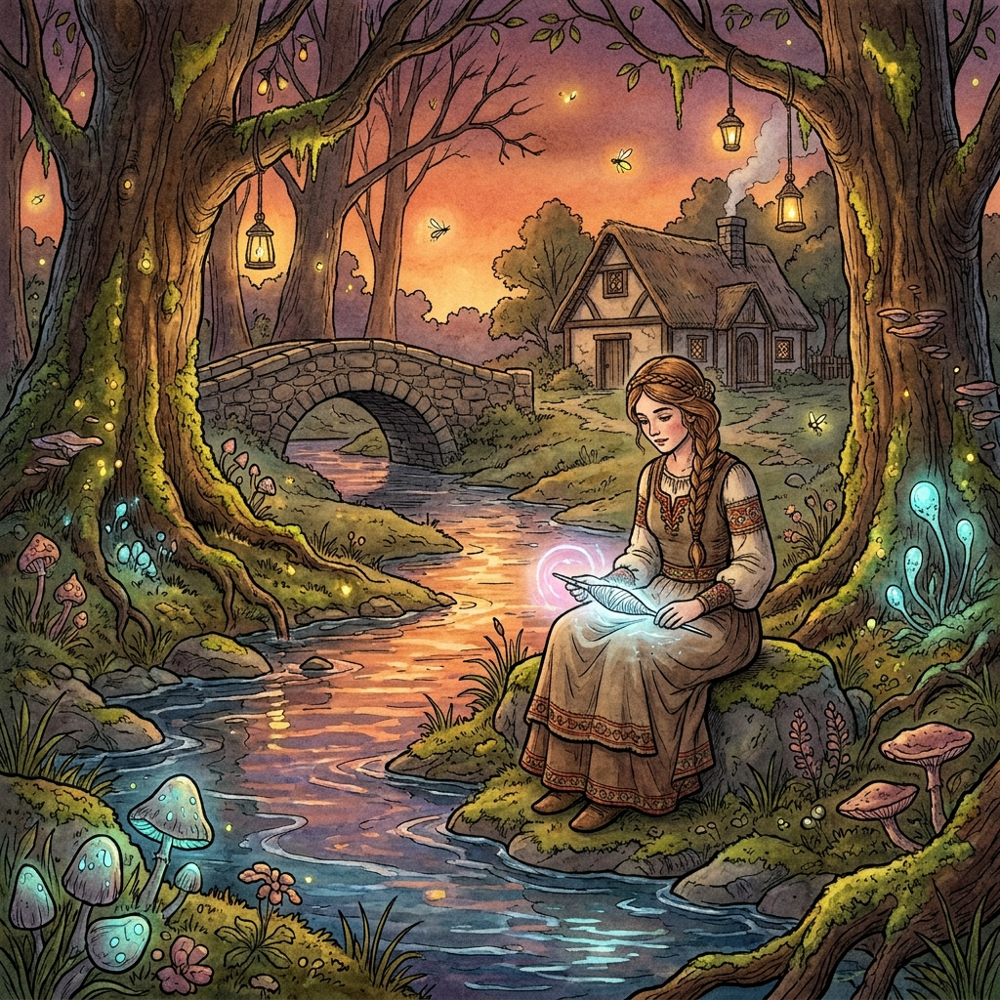

Die verschwiegene Hüterin und die silberne Spindel

Diese Geschichte anhören
Es war einmal eine edle Königstochter, deren Mutter ihr auf den Weg in die Fremde ein feines Tuch mit drei Tropfen Blutes als Schutz mitgab. Auf der langen Reise zwang sie jedoch die herrschsüchtige Magd mit finsteren Drohungen, die Kleider zu tauschen und das edle Pferd zu überlassen. Die Prinzessin musste schwören, keinem Menschen von diesem frevelhaften Tausch zu erzählen, da sonst ihr Leben verwirkt sei. So kam sie als einfache Viehmagd an den fremden Hof, während die falsche Braut mit großem Prunk empfangen wurde. Jeden Abend aber saß die Prinzessin am kühl rauschenden Wiesenbach, holte eine silberne Spindel hervor und klagte den sanften Wellen und dem Wind ihr schweres Herzeleid. Der alte König, der ihre feine Sanftmut bemerkte, folgte ihr heimlich eines Abends und lauschte ihren Worten am Wasser. Da erkannte er die große Schandtat, verjagte die treulose Magd aus dem Reiche und führte die wahre Prinzessin voller Freude als treue Gemahlin für seinen Sohn auf das Schloss.